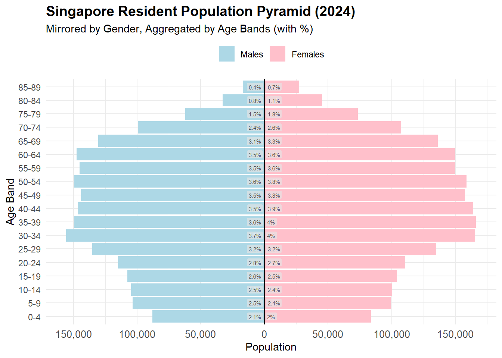
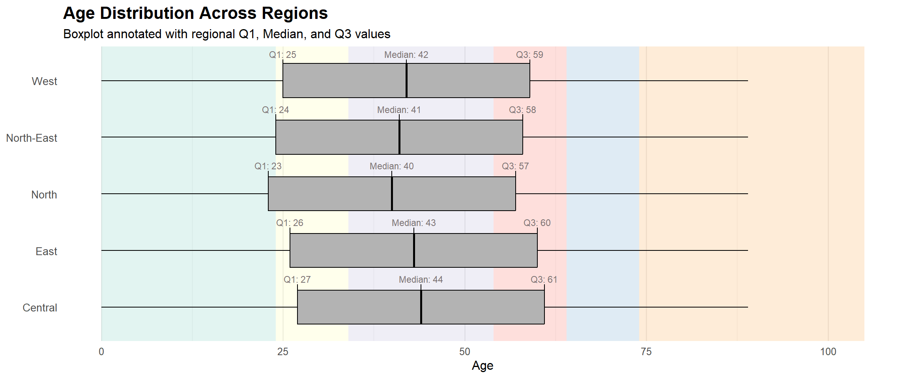
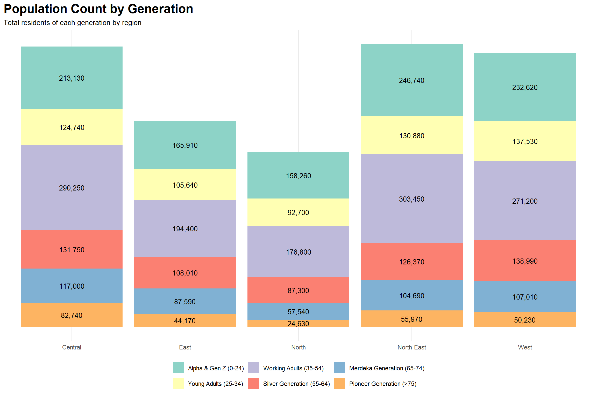

pacman::p_load(
tidyverse, # Core data manipulation and ggplot2 plotting
knitr, # Dynamic report generation and rendering
patchwork, # Combines multiple ggplot2 plots
ggthemes, # Additional themes and visual styles
scales, # Formatting axes, scales, and labels
ggtext, # Rich text formatting in ggplot titles/labels
ggalt, # Dumbbell, lollipop, and other advanced geoms
ggridges, # Ridgeline plots to visualize distributions
ggpubr, # Publication-ready ggplot2 enhancements
ggExtra, # Marginal plots for added insight
cowplot, # Publication-quality figure alignment
ggnewscale # Allows multiple color/fill scales in one ggplot
)Take-Home Exercise 1
1. Overview
Setting the scene
A local online media company that publishes daily content on digital platforms is planning to release an article on demographic structures and distribution of Singapore in 2024.
Our task
In this exercise, Exploratory Data Analysis (EDA) methods and ggplot functions are used to explore:
Need to write something here
and here
2. Getting started, Data Loading and Preparation
This section documents the process of preparing the dataset for analysis and visualization. It covers the loading of R packages, initial inspection of the dataset, and the necessary wrangling and transformation steps applied.
📦2.1 Load required packages
Before importing the data, we load several R packages from the tidyverse ecosystem and supporting libraries for data wrangling and visualization. These packages streamline data processing and produce publication-ready plots using ggplot2. This setup ensure that we have both the flexibility and power to craft expressive, publication-quality demographic visualizations for the report.
📌 Summary of Package Roles
| Library | Description |
|---|---|
| tidyverse | A collection of core packages designed for data science, used extensively for data preparation and wrangling |
| knitr | Generates dynamic R markdown or Quarto reports |
| patchwork | Combine multiple ggplots into a single layout |
| ggthemes | Provides extra themes (e.g. economist, wsj) |
| scales | For data/axes label formatting and annotations for ggplot2 |
| ggtext | Supports improved and rich text rendering for ggplot2 |
| ggalt | A compendium of ‘geoms’, ‘coords’, ‘stats’, scales and fonts for ggplots2 |
| ggridges | For ridgeline plots that create the impression of a mountain range. They can be useful for visualising changes in distributions over time or space. |
| ggpubr | For publication-ready plots. |
| ggextra | For adding marginal plots to ggplot2 |
| cowplot | Provides precise figure alignment and plot annotation |
| ggnewscale | Enables multiple fill/colour scales in a single plot. For defining scales in ggplot2. |
We load the following R packages using the pacman::p_load() :
📂 2.2 Loading the Data and Taking a Glimpse of the Dataset
The dataset, Singapore Residents by Planning Area / Subzone, Single Year of Age and Sex, June 2024, published by the Department of Statistics, Singapore (DOS) was loaded using the read_csv() function from the readr package in the tidyverse collection.
# Load the dataset
df <- read_csv("Dataset/respopagesex2024.csv")The dataset contains 60,424 rows and 6 columns. Each row represents the count of residents for a specific combination of planning area, subzone, age, sex, and year.
glimpse(df)Rows: 60,424
Columns: 6
$ PA <chr> "Ang Mo Kio", "Ang Mo Kio", "Ang Mo Kio", "Ang Mo Kio", "Ang Mo K…
$ SZ <chr> "Ang Mo Kio Town Centre", "Ang Mo Kio Town Centre", "Ang Mo Kio T…
$ Age <chr> "0", "0", "1", "1", "2", "2", "3", "3", "4", "4", "5", "5", "6", …
$ Sex <chr> "Males", "Females", "Males", "Females", "Males", "Females", "Male…
$ Pop <dbl> 10, 10, 10, 10, 10, 10, 10, 10, 30, 10, 20, 10, 20, 30, 30, 10, 3…
$ Time <dbl> 2024, 2024, 2024, 2024, 2024, 2024, 2024, 2024, 2024, 2024, 2024,…🧾 Variable Descriptions
| Column | Type | Description |
|---|---|---|
PA |
Categorical | Planning Area (e.g., Ang Mo Kio, Bedok) |
SZ |
Categorical | Subzone within each Planning Area |
Age |
Categorical (to be converted) | Age in single years (e.g., 0–100+) |
Sex |
Categorical | Gender: Male / Female |
Pop |
Continuous (Integer) | Number of residents (rounded to nearest 10) |
Time |
Identifier / Constant | Time period (always 2024 in this dataset) |
🧹2.3 Wrangling, Cleaning & Transformation
Several data cleaning and transformation steps were applied to prepare the dataset for analysis and visualization:
✅ Convert Age to Integer
df <- df %>%
mutate(Age = as.integer(Age))✅ Create AgeBand for Grouped Analysis
We bin the ages into meaningful age bands for easier demographic comparison and visualization.
df <- df %>%
mutate(AgeBand = cut(Age,
breaks = c(0, 5, 10, 15, 20, 25, 30, 35, 40, 45, 50, 55,
60, 65, 70, 75, 80, 85, 90, 95, 100, Inf),
labels = c("0-4", "5-9", "10-14", "15-19", "20-24", "25-29",
"30-34", "35-39", "40-44", "45-49", "50-54",
"55-59", "60-64", "65-69", "70-74", "75-79",
"80-84", "85-89", "90-94", "95-99", "100+"),
right = FALSE))✅ Aggregate for Exploratory Plots
We group by Planning Area, Sex, and Age Band to prepare for visual comparisons across demographic segments.
df_summary <- df %>%
group_by(PA, Sex, AgeBand) %>%
summarise(Total = sum(Pop), .groups = "drop")This df_summary table forms the basis for multiple exploratory visualizations in the next section.
# Example structure (actual filtering by PA can be added)
ggplot(df_summary %>% filter(PA == "Ang Mo Kio"),
aes(x = AgeBand, y = ifelse(Sex == "Males", -Total, Total), fill = Sex)) +
geom_bar(stat = "identity") +
coord_flip() +
scale_fill_brewer(palette = "Set2") +
labs(title = "Population Pyramid: Ang Mo Kio", y = "Population", x = "Age Band") +
theme_minimal()pyramid <- df_summary %>%
filter(PA == "ANG MO KIO") %>%
ggplot(aes(x = AgeBand, y = ifelse(Sex == "Males", -Total, Total), fill = Sex)) +
geom_bar(stat = "identity") +
coord_flip() +
scale_fill_brewer(palette = "Set2") +
labs(title = "Population Pyramid: Ang Mo Kio", y = "Population", x = "Age Band") +
theme_minimal()top_5_areas <- df_summary %>%
group_by(PA) %>%
summarise(Pop = sum(Total)) %>%
slice_max(order_by = Pop, n = 5) %>%
pull(PA)
df_summary %>%
filter(PA %in% top_5_areas) %>%
ggplot(aes(x = AgeBand, y = Total, fill = Sex)) +
geom_col(position = "dodge") +
facet_wrap(~ PA) +
theme_minimal() +
labs(title = "Age Band Composition Across Top 5 Planning Areas")df_children <- df %>%
filter(Age < 15) %>%
group_by(PA, SZ) %>%
summarise(Children = sum(Pop), .groups = "drop")
ggplot(df_children, aes(x = reorder(SZ, Children), y = PA, fill = Children)) +
geom_tile() +
scale_fill_viridis_c() +
theme_minimal() +
theme(axis.text.x = element_text(angle = 90)) +
labs(title = "Child Population Density by Subzone",
x = "Subzone", y = "Planning Area")
df_ratio <- df %>%
mutate(AgeGroup = case_when(
Age >= 65 ~ "Elderly",
Age >= 20 & Age < 65 ~ "Working",
TRUE ~ "Other"
)) %>%
group_by(PA, AgeGroup) %>%
summarise(Pop = sum(Pop), .groups = "drop") %>%
pivot_wider(names_from = AgeGroup, values_from = Pop) %>%
mutate(DependencyRatio = Elderly / Working)
ggplot(df_ratio, aes(x = reorder(PA, DependencyRatio), y = DependencyRatio)) +
geom_col(fill = "darkred") +
coord_flip() +
labs(title = "Elderly Dependency Ratio by Planning Area",
x = "Planning Area", y = "Elderly per Working-age Resident") +
theme_minimal()
df_ratio_by_age <- df %>%
group_by(AgeBand, Sex) %>%
summarise(Pop = sum(Pop), .groups = "drop") %>%
pivot_wider(names_from = Sex, values_from = Pop) %>%
mutate(SexRatio = Males / Females)
ggplot(df_ratio_by_age, aes(x = AgeBand, y = SexRatio, group = 1)) +
geom_line(color = "steelblue") +
geom_point() +
labs(title = "Sex Ratio by Age Band (Males per Female)",
x = "Age Band", y = "Sex Ratio") +
theme_minimal()
df_subzone_pop <- df %>%
group_by(SZ) %>%
summarise(Pop = sum(Pop)) %>%
arrange(desc(Pop)) %>%
slice_head(n = 20)
ggplot(df_subzone_pop, aes(x = reorder(SZ, Pop), y = Pop)) +
geom_col(fill = "darkblue") +
coord_flip() +
labs(title = "Top 20 Most Populated Subzones", x = "Subzone", y = "Population") +
theme_minimal()df_median_age <- df %>%
group_by(SZ) %>%
summarise(MedianAge = median(Age, na.rm = TRUE)) %>%
arrange(MedianAge)
youngest <- df_median_age %>% slice_head(n = 10)
oldest <- df_median_age %>% slice_tail(n = 10)
combined <- bind_rows(youngest, oldest)
ggplot(combined, aes(x = reorder(SZ, MedianAge), y = MedianAge)) +
geom_point(color = "darkgreen", size = 3) +
coord_flip() +
labs(title = "Top 10 Youngest and Oldest Subzones",
x = "Subzone", y = "Median Age") +
theme_minimal()
# Load spatial packages
pacman::p_load(sf, ggplot2, tidyverse, viridis)
# Read the planning area shapefile (GeoPackage or GeoJSON recommended)
planning_areas <- st_read("Dataset/MP19_PLANNING_AREA_NO_SEA_PL.kml") # or .shp/.geojsonReading layer `URA_MP19_PLNG_AREA_NO_SEA_PL' from data source
`D:\OneDrive - Singapore Management University\dchiamz2024\ISSS608-VAA\Take-Home_Ex\Take-Home_Ex01\Dataset\MP19_PLANNING_AREA_NO_SEA_PL.kml'
using driver `KML'
Simple feature collection with 55 features and 2 fields
Geometry type: MULTIPOLYGON
Dimension: XY
Bounding box: xmin: 103.6057 ymin: 1.158699 xmax: 104.0885 ymax: 1.470775
Geodetic CRS: WGS 84# Prepare population data: total by PA
pa_pop <- df %>%
group_by(PA) %>%
summarise(Pop = sum(Pop))
# Ensure both PA names match exactly (some cleaning may be needed)
# Join spatial and population data
map_data <- planning_areas %>%
left_join(pa_pop, by = c("Name" = "PA")) # Adjust column name if different
# Plot
ggplot(map_data) +
geom_sf(aes(fill = Pop), color = "white") +
scale_fill_viridis_c(option = "plasma", trans = "log") +
labs(title = "Population Distribution by Planning Area, Singapore (2024)",
fill = "Population") +
theme_minimal()
# Load required packages
pacman::p_load(sf, ggplot2, tidyverse, viridis)
# Read + fix shapefile
planning_areas <- st_read("Dataset/MP19_PLANNING_AREA_NO_SEA_PL.kml") %>%
mutate(Name = str_trim(toupper(Name))) %>%
st_make_valid()Reading layer `URA_MP19_PLNG_AREA_NO_SEA_PL' from data source
`D:\OneDrive - Singapore Management University\dchiamz2024\ISSS608-VAA\Take-Home_Ex\Take-Home_Ex01\Dataset\MP19_PLANNING_AREA_NO_SEA_PL.kml'
using driver `KML'
Simple feature collection with 55 features and 2 fields
Geometry type: MULTIPOLYGON
Dimension: XY
Bounding box: xmin: 103.6057 ymin: 1.158699 xmax: 104.0885 ymax: 1.470775
Geodetic CRS: WGS 84# Join and calculate density
map_data <- planning_areas %>%
left_join(pa_pop, by = c("Name" = "PA")) %>%
mutate(area_km2 = as.numeric(st_area(geometry)) / 10^6,
density = Pop / area_km2)
# Plot
map_plot <- ggplot(map_data) +
geom_sf(aes(fill = density), color = "white") +
geom_sf_text(aes(label = Name), size = 3) +
scale_fill_viridis_c(option = "plasma", trans = "log", na.value = "grey90") +
labs(title = "Population Density by Planning Area (2024)",
subtitle = "Residents per square kilometre",
fill = "Density\n(per km²)") +
theme_void()